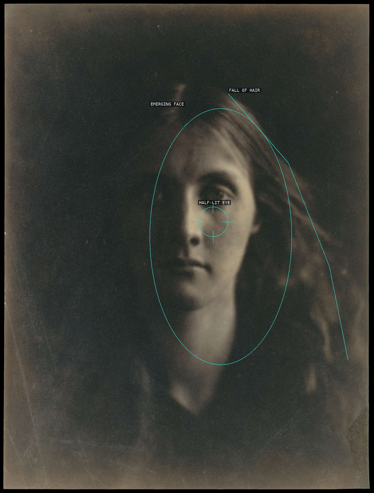
A close face slowly emerges from the dark, with the eye as the hinge between light and shadow.
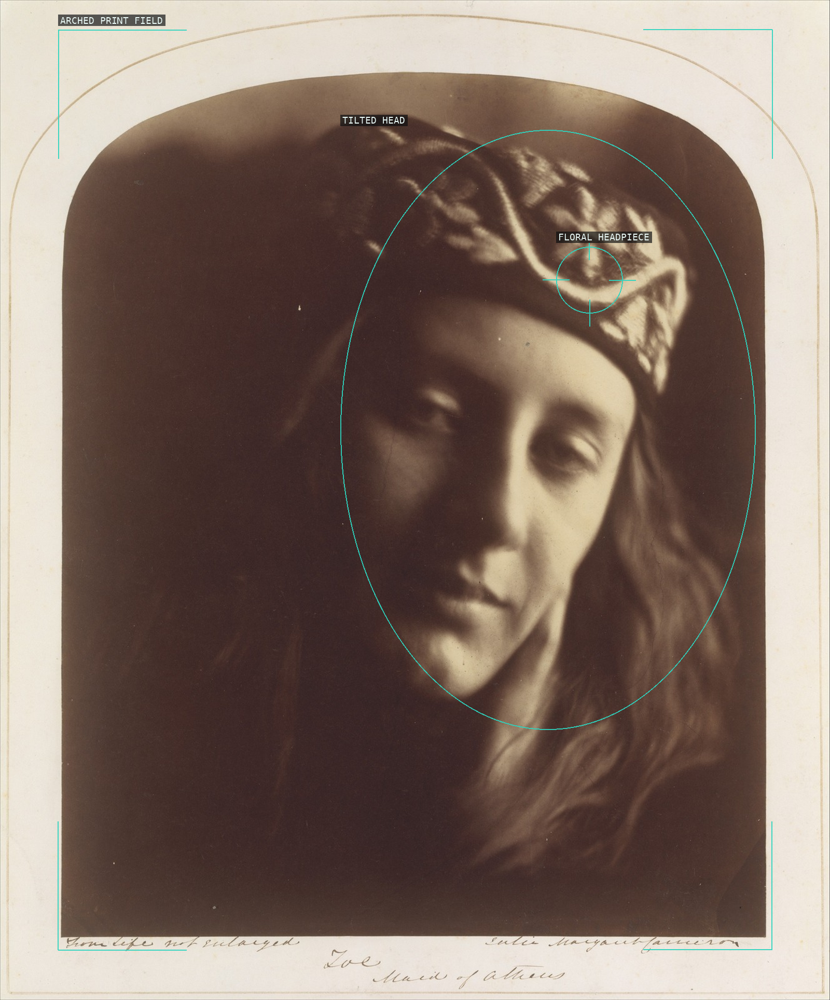
The arch contains a face that tilts into softness rather than settling into a sharp likeness.
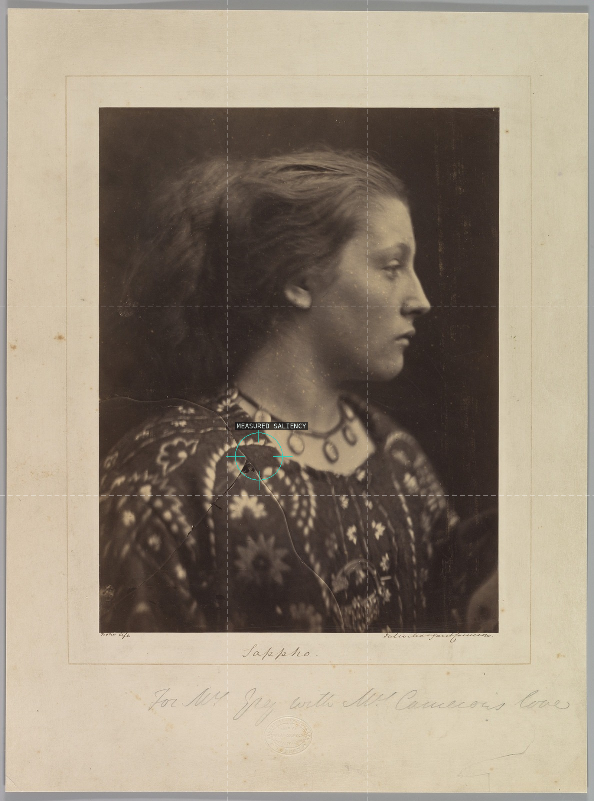
Fallback: phi grid plus the analyzer's measured saliency; the visual profile anchor did not converge with the detector.

Tennyson's profile and clasped hands turn a small arched field into a sculptural, monk-like portrait.
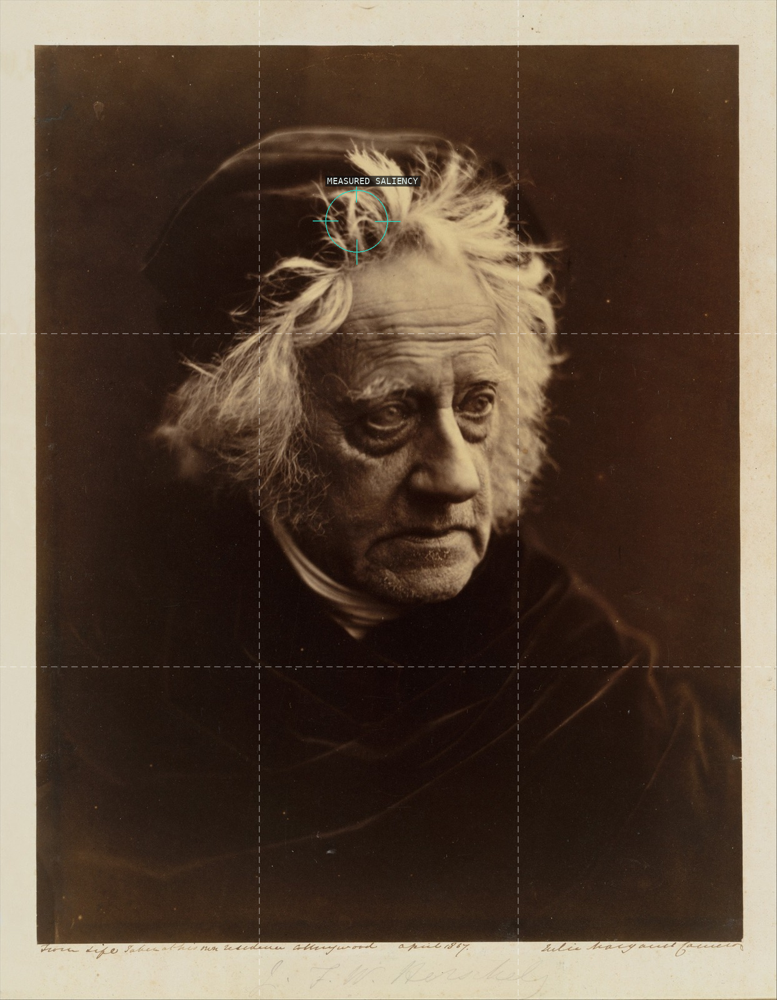
Fallback: thirds grid plus the analyzer's measured saliency; the visual eye anchor did not converge with the detector.
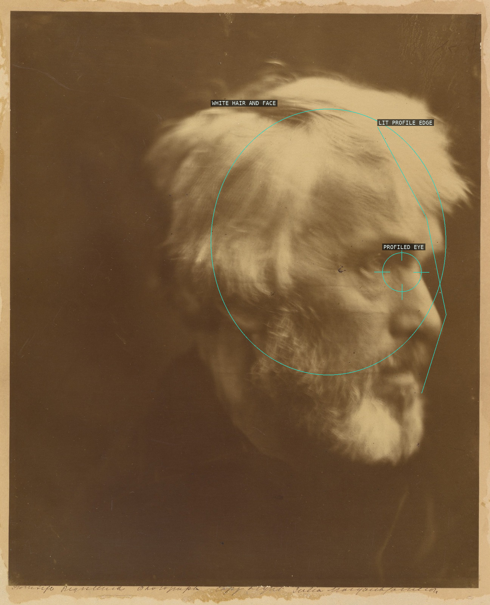
Carlyle's bright profile presses to the right edge while the unlit field makes its softness feel immense.
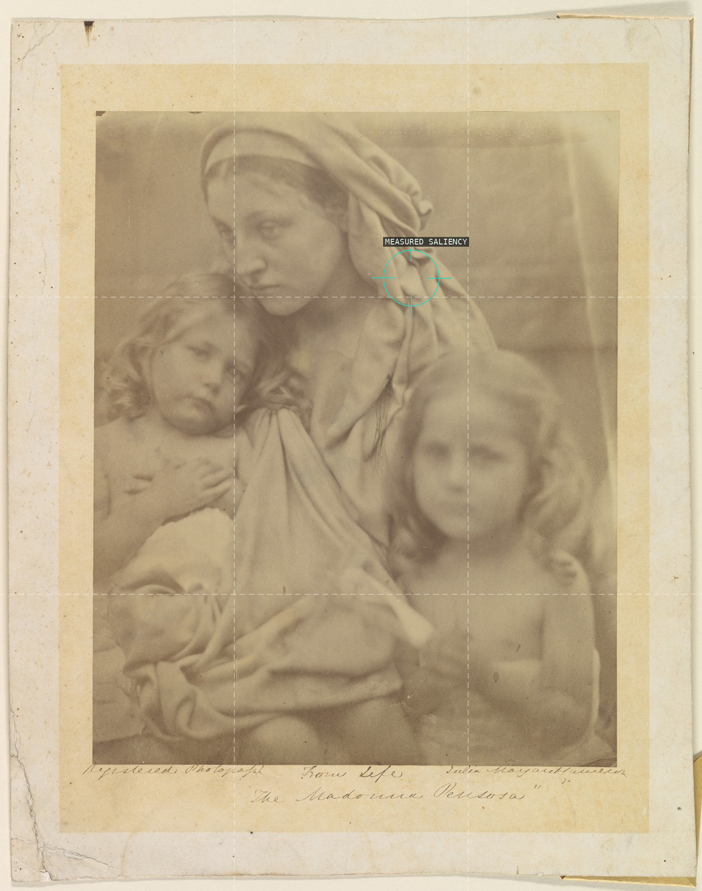
Fallback: thirds grid plus the analyzer's measured saliency; the visual mother-gaze anchor did not converge with the detector.
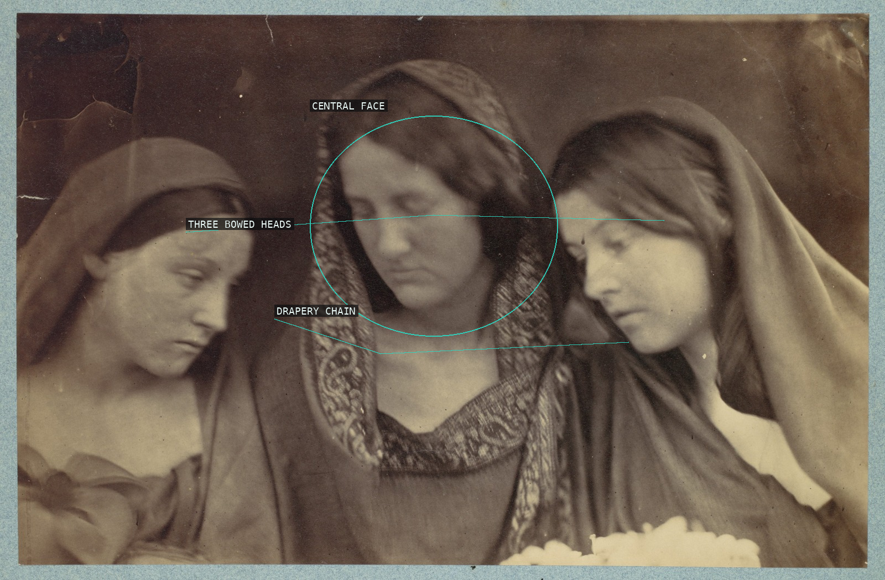
Three bowed heads form a restrained horizontal chorus, their veils and drapery closing the group.
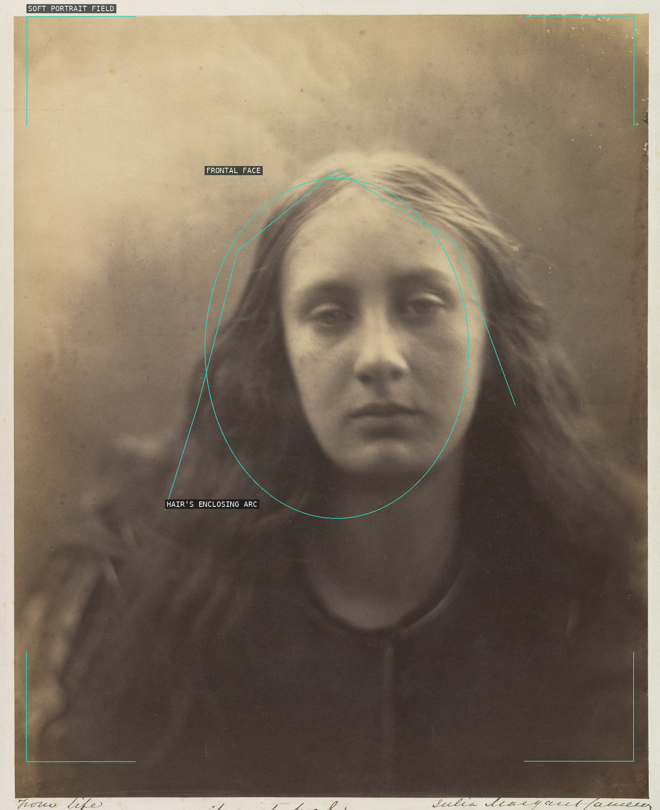
A frontal face floats within a haze of hair and pale background, without an architectural support.
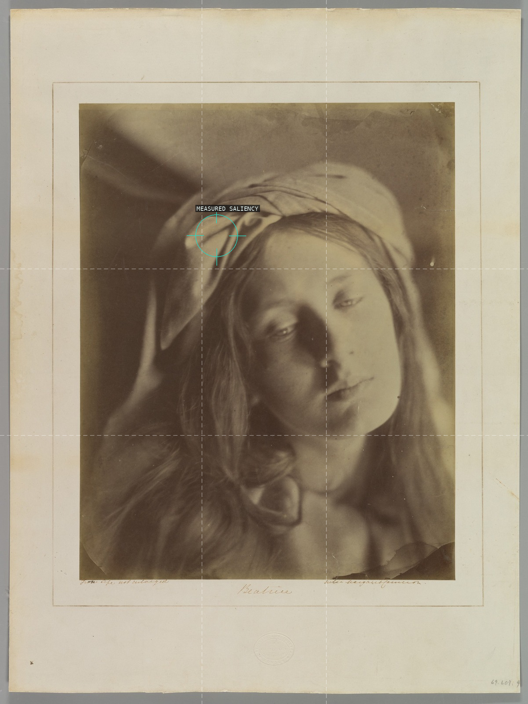
Fallback: phi grid plus the analyzer's measured saliency; the visual eye anchor did not converge with the detector.
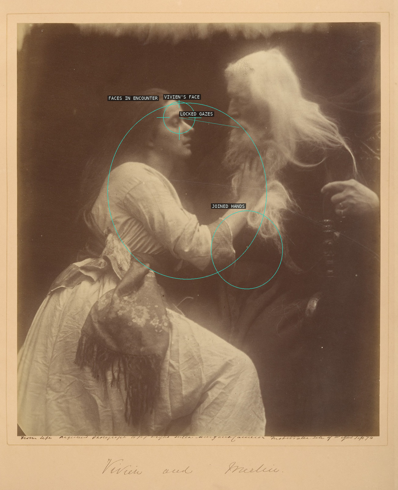
Vivien and Merlin meet face to face while the joined hands bind the staged encounter.
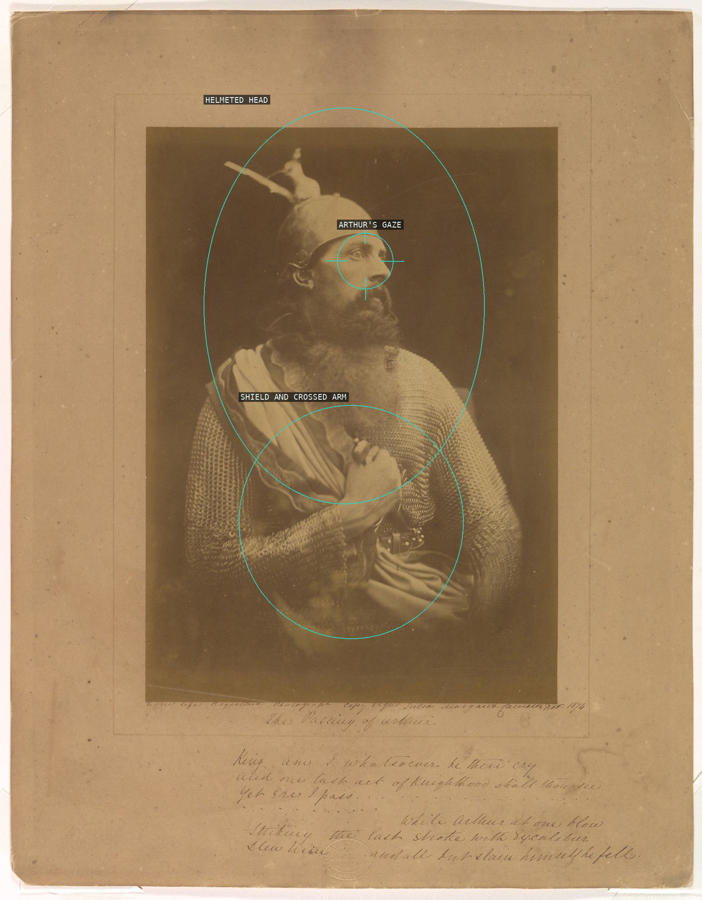
Arthur's helmeted head rises above the shield, the crossed arms turning the solitary tableau into a closed diagonal.